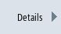

Möchten Sie den Ausschnitt der Zeichnung verschieben, vergrößern oder verkleinern, um z.B. Details anzuschauen oder später wieder die komplette Zeichnung anzuzeigen, nutzen Sie die Lupe.
Mit der Lupe können Sie den Ausschnitt selbst bestimmen und dann vergrößern oder verkleinern.
Voraussetzung
Die DXF-Datei ist im Programm-Manager bzw. im Editor geöffnet.
Vorgehensweise
|  | 1. | Drücken Sie die Softkeys "Details" und "Lupe". Eine Lupe in Form eines rechteckigen Rahmens wird eingeblendet. |
 |
| | 2. | Drücken Sie die Taste <+>, um den Rahmen zu vergrößern. |
| | | - ODER - |
| | | Drücken Sie die Taste <->, um den Rahmen zu verkleinern. |
| | | - ODER - |
 |  | | Drücken Sie eine der Cursor-Tasten, um den Rahmen nach oben, links, rechts oder unten zu verschieben. |
 |  |
 | 3. | Drücken Sie den Softkey "OK", um den gewählten Ausschnitt zu übernehmen. |